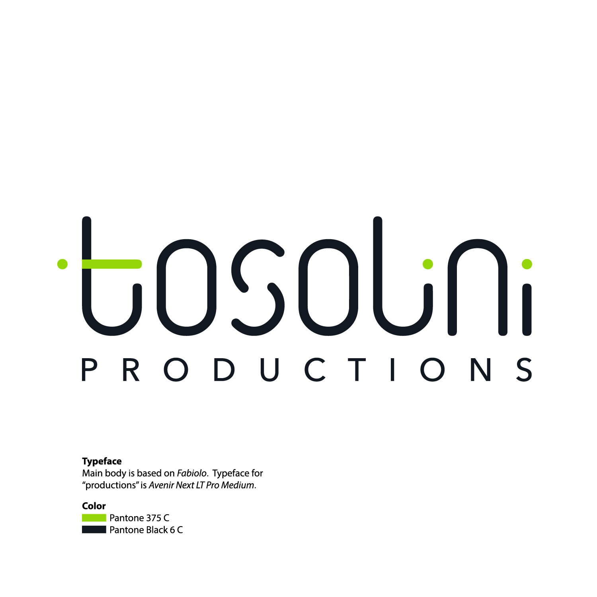

3D & architectural visualization
Show what’s possible before it’s built. Spaces, products, and concepts, made visible.

Loading the showroom…
Digital meets physical.
We turn complex stories into spaces, interactions, and experiences people remember.
Step inside01 INTERACTIVE DIGITAL SIGNAGE
Turn a moment of attention into a meaningful interaction. Touch experiences for showrooms, briefing centers, and events.
02 REALITY CAPTURE / DIGITAL TWINS
Make a physical space accessible from anywhere. Detailed digital twins for exploring, understanding, and sharing.
03 SPATIAL COMPUTING
Put people inside the idea. Immersive experiences that make products, places, and possibilities easier to understand.
A LITTLE FURTHER
The right format for your story.
The craft to bring it together.
Show what’s possible before it’s built. Spaces, products, and concepts, made visible.
Explore an idea, test an interaction, and find a practical path from possibility to experience.
Bring clarity to a complex story through animation, thoughtful visuals, and purposeful motion.
GOOD COMPANY
A selection of clients and collaborators.
YOUR NEXT CHAPTER
Have a space, a story, or a possibility in mind?
We’d love to hear about it.